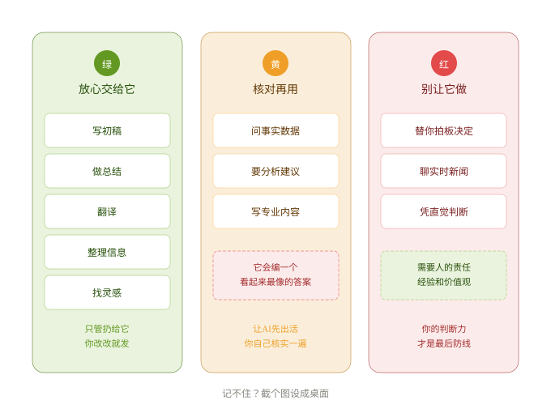
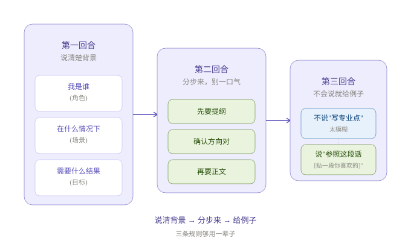

普通人也能看懂的 AI 认知课
不写代码、不背术语。读完这门课，你能跟任何人讲清楚 AI 到底是怎么回事。
打开新闻全是 AI，同事在聊，朋友圈在转。你想弄明白，但每个解释都带着一堆听不懂的词。
这章只有三个比喻。看完它们，你就能跟任何人解释清楚 AI 是什么。
想象一个人，一辈子关在图书馆里。读完了每一本书、每一篇文章。
你问他「巴黎怎么样」，他能告诉你铁塔多高、可颂怎么做——因为他读过所有关于巴黎的文字。
但他从没去过巴黎。他说的每句话都是从书里拼出来的，不是亲身经历。
AI 就这样。它的知识是「地图上的标记」，不是「踩过的路」。
把 AI 当成你手下干活超快但不靠谱的实习生：
你说需求他立刻出初稿
从法律到菜谱都知道
你得检查他的工作
说模糊了他就乱猜
活是他干的，锅是你的。最终拍板永远在你。
你跟他说「床前明月」，他脑子里扫过所有读过的东西，发现「光」是那个最常跟在后面的字。
他不是查出来的，是猜出来的。一个字一个字猜，串成一段话。
这就是为什么 AI 有时会胡扯 —— 它不会说「我不知道」，它会编一个最像正确答案的答案。
不用记密密麻麻的清单，记住三种颜色就够了：

三条规则，够用一辈子。

把一段凌乱的会议记录丢给 AI，让它按「议题/发言要点/未共识/行动项」整理。
不许出现任何技术名词，用三句话解释 ChatGPT 是什么。
把太软的语气改成坚定但不失礼貌，告诉 AI「保留开头结尾，删掉不急，加明确时限」。
AI 是一根杠杆。它能放大你的力气，但支点永远在你手上——你的判断力。